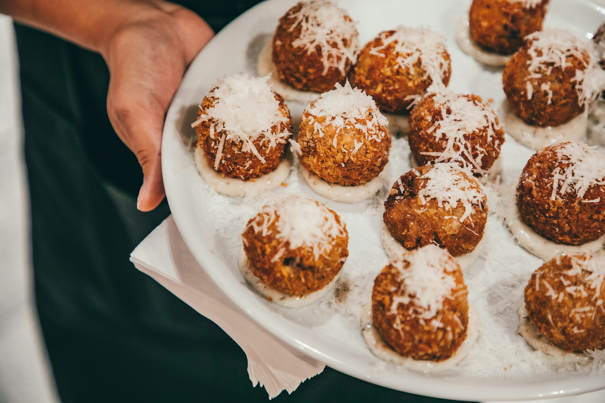

Arancini

Their origin goes back to when Sicily was under Arab rule in the 10th century, and traders devised a way to transport meals consisting of rice and meat long distances on horseback. Today, they are one of the highlights of Palermo's street food scene and not terribly difficult to make yourself.
- Prep time - 30 minutes
- Cook time - 10 minutes
Ingredients
- 3½ cups low-sodium homemade chicken stock or store-bought broth
- 4 Tbsp. unsalted butter, divided
- 1 medium onion, finely chopped
- 2 garlic cloves, thinly sliced
- 1 cup carnaroli rice or arborio rice
- 1½ tsp. Diamond Crystal or 1 tsp. Morton kosher salt, plus more
- ½ cup dry white wine
- 2 oz. finely grated Parmesan cheese (about 1 cup)
- ¼ cup heavy cream
- 2 tsp. finely grated lemon zest
- 1 Tbsp. fresh lemon juice
- 1 tsp. freshly ground black pepper, plus more
- 3 oz. low-moisture mozzarella cheese, cut into ⅓" pieces
- 2 cups panko
- ½ cup all-purpose flour
- 2 large eggs
- Canola or vegetable oil (for frying; about 6 cups)
Method
- Bring 3½ cups low-sodium homemade chicken stock or store-bought broth to a simmer in a medium pot over medium heat, then keep warm over low.
- Heat 2 Tbsp. unsalted butter in a medium saucepan over medium. Add 1 medium onion, finely chopped, and cook, stirring often, until softened but not browned, 4-5 minutes. Add 2 garlic cloves, thinly sliced, and cook, stirring constantly, until softened but not browned, about 1 more minute.
- Stir in 1 cup carnaroli rice or arborio rice; season with 1½ tsp. Diamond Crystal or 1 tsp. Morton kosher salt. Cook, stirring often, until some of the grains turn translucent around the edges, about 3 minutes. Add ½ cup dry white wine and cook, stirring often, until pan is almost dry, about 2 minutes. Ladle in 1 cup warm stock, bring to a simmer, and cook, stirring often, until liquid is absorbed, about 4 minutes. Ladle in another 1 cup stock and continue to cook, stirring yet again, until most of the liquid is absorbed, 5-7 minutes. Add remaining 1½ cups stock and cook, stirring often, until rice is cooked through but retains some bite and liquid is mostly absorbed, 9-11 minutes longer. Remove from heat. Stir in 2 oz. finely grated Parmesan cheese (about 1 cup), ¼ cup heavy cream, 2 tsp. finely grated lemon zest, 1 Tbsp. fresh lemon juice, 1 tsp. freshly ground black pepper, and remaining 2 Tbsp. unsalted butter. Season risotto with kosher salt.
- Spread risotto in an even layer on a rimmed, parchment-lined baking sheet. Refrigerate at least 1 hour.
- Do Ahead: Risotto can be prepared and chilled 24 hours in advance. Cover with plastic wrap after 1 hour so it doesn't develop a skin.
- Line another rimmed baking sheet with parchment paper. Scoop about ¼ cup risotto into your hands and form into a patty about 2½" in diameter (it doesn't need to be perfect!). Place 2-3 pieces mozzarella from 3 oz. low-moisture mozzarella cheese, cut into ⅓" pieces, in the center of patty. Carefully pinch and shape risotto so it completely encases the cheese, then roll into a 2" ball. Your hands might get messy, and the balls may be slightly misshapen (they'll firm up later). Place on prepared baking sheet. Repeat with remaining risotto and mozzarella. Freeze rice balls 10 minutes.
- Meanwhile, pulse 2 cups panko in a food processor or place in a ziptop plastic bag and crush with a rolling pin until finer crumbs form. Transfer to a shallow bowl. Place ½ cup all-purpose flour in another shallow bowl. Lightly beat 2 large eggs in a third shallow bowl to blend; season all bowls with kosher salt and freshly ground black pepper. Working one at a time, dredge rice balls in flour, shaking off excess. Transfer to bowl with egg and turn to coat, letting excess drip back into bowl. Coat with panko, pressing gently to adhere. Transfer to a parchment-lined rimmed baking sheet. Chill rice balls while you heat oil.
- Pour canola or vegetable oil (about 6 cups) into a medium heavy pot fitted with thermometer to a depth of 2". Warm oil over medium-high heat until thermometer registers 350°. Carefully lower half of rice balls into oil with a slotted spoon or spider and fry until deeply golden brown, 6-8 minutes. Transfer to paper towels to drain; season with salt. Repeat with remaining batch of rice balls.
Tips
- Let the rice balls rest. Allowing the arancini to firm up briefly in the refrigerator or freezer before breading and frying will help them keep their shape.
- Using panko bread crumbs (flaky Japanese bread crumbs made from crustless white bread) instead of traditional Italian-style breadcrumbs will result in a lighter crunch since it absorbs less oil deep-frying. Blitzing the panko in a food processor first will give the crust an even finer texture and help the crumbs adhere.